| species | Underweight | Normal | Overweight | Obese | Total |
|---|---|---|---|---|---|
| Adelie | 30 | 84 | 32 | 0 | 146 |
| Chinstrap | 8 | 49 | 11 | 0 | 68 |
| Gentoo | 0 | 1 | 51 | 67 | 119 |
| Total | 38 | 134 | 94 | 67 | 333 |
STA 113 2.0 Descriptive Statistics
Bar Charts for Two Categorical Variables
Dr. Thiyanga S. Talagala
Department of Statistics, Faculty of Applied Sciences
University of Sri Jayewardenepura, Sri Lanka
Department of Statistics, Faculty of Applied Sciences
University of Sri Jayewardenepura, Sri Lanka
Data Set
Grouped Bar Chart/ Clustered Bar Chart
Figure 1: Composition of the Sample by Species and BMI Category
Figure 1: Composition of the Sample by Species and BMI Category
Figure 1: Composition of the Sample by Species and BMI Category
Percentage Grouped Bar Chart
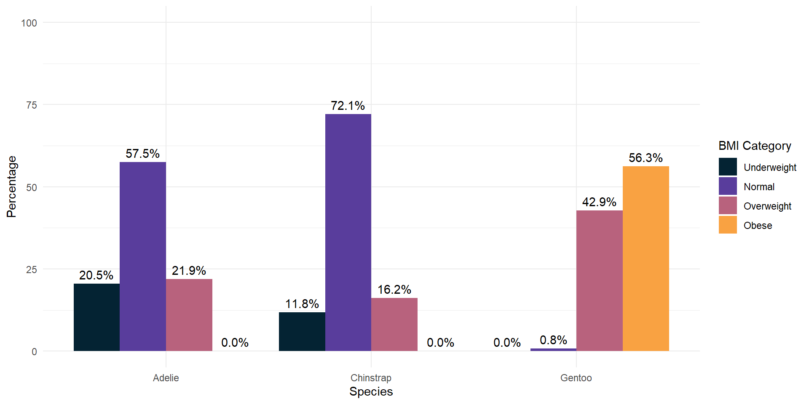Row percentages
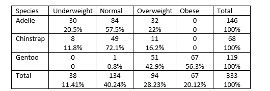Counts

Percentages

Column Percentages
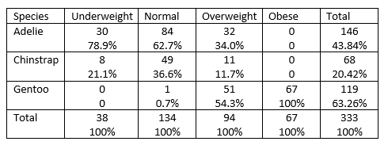Counts
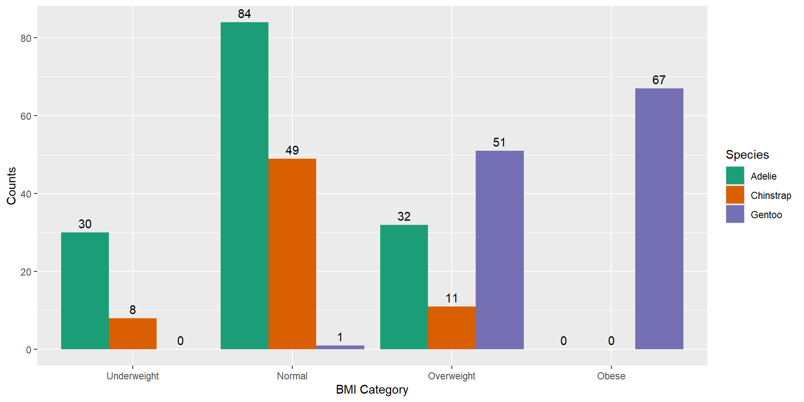
Percentages
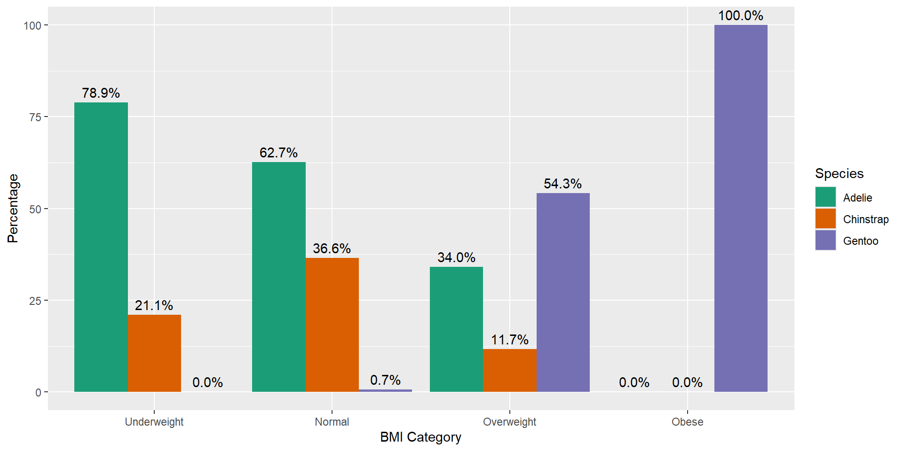
Staked Bar Chart
Counts
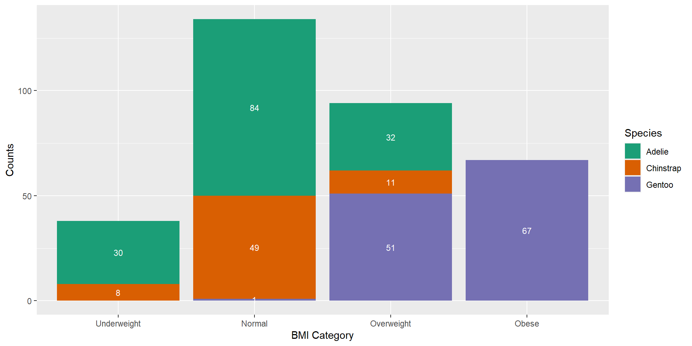
Percentages
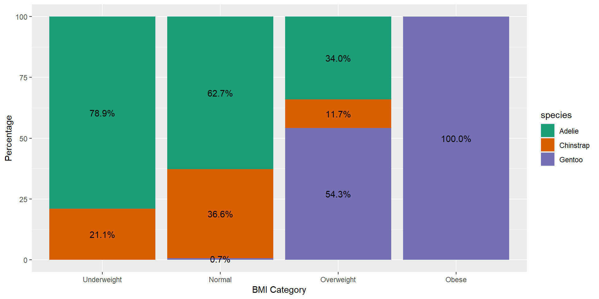
Counts
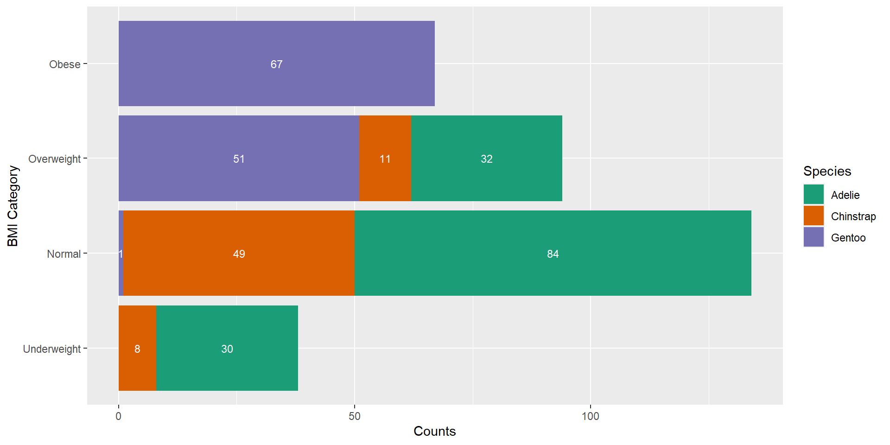
Percentages
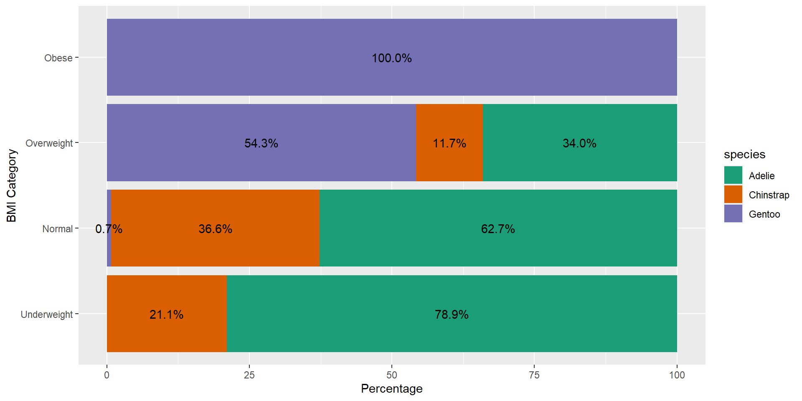
Percentage chart
Advantages
Shows the proportion of each category relative to the whole, making it easier to understand the distribution.
Allows for fair comparisons between different groups or categories, regardless of their size.
Highlights the relative importance of different categories within each group.
Disadvantages
- Doesn’t provide the raw counts, which might be necessary for understanding the actual volume or size of each category.
Counts chart
Advantages
Clearly shows the frequency of each category, providing a direct understanding of the volume or size.
Useful when the actual count is crucial for decision-making.
Disadvantages
- Difficulties arise when comparing groups, especially when their sizes differ.
Grouped Bar Chart (Percentage)
Advantages
Comparison within groups: It allows for easy comparison of values within each category group.
Comparison between groups: It also facilitates comparison between different category groups.
Disadvantages
If there are too many groups or variables, the bars can become narrow, making it difficult to read.
Complexity with many groups: With a large number of groups or variables, the chart can become crowded and hard to read.
Difficulty in showing totals: It’s not straightforward to show the total magnitude of each category since bars are grouped.
Stacked Bar Chart
Stacked Count Chart
Allows viewers to see how totals accumulate as each category is stacked on top of one another.
Useful for comparing the total magnitude of each category across different groups or segments.
Ideal when the emphasis is on the total quantity of items in each category rather than their relative proportions.
Stacked Percentage Chart
Use when you want to show the relative proportion or contribution of each category to the total.
Helpful for illustrating the distribution of percentages within categories across different groups or segments.
Suitable when you want to emphasize the composition or share of each category relative to the whole.
Stacked Bar Chart: Disadvantages
It can be challenging to compare individual segments between different groups because they are not aligned horizontally.
Small segments can be hard to interpret accurately when they are stacked on top of each other.
Which is the best?
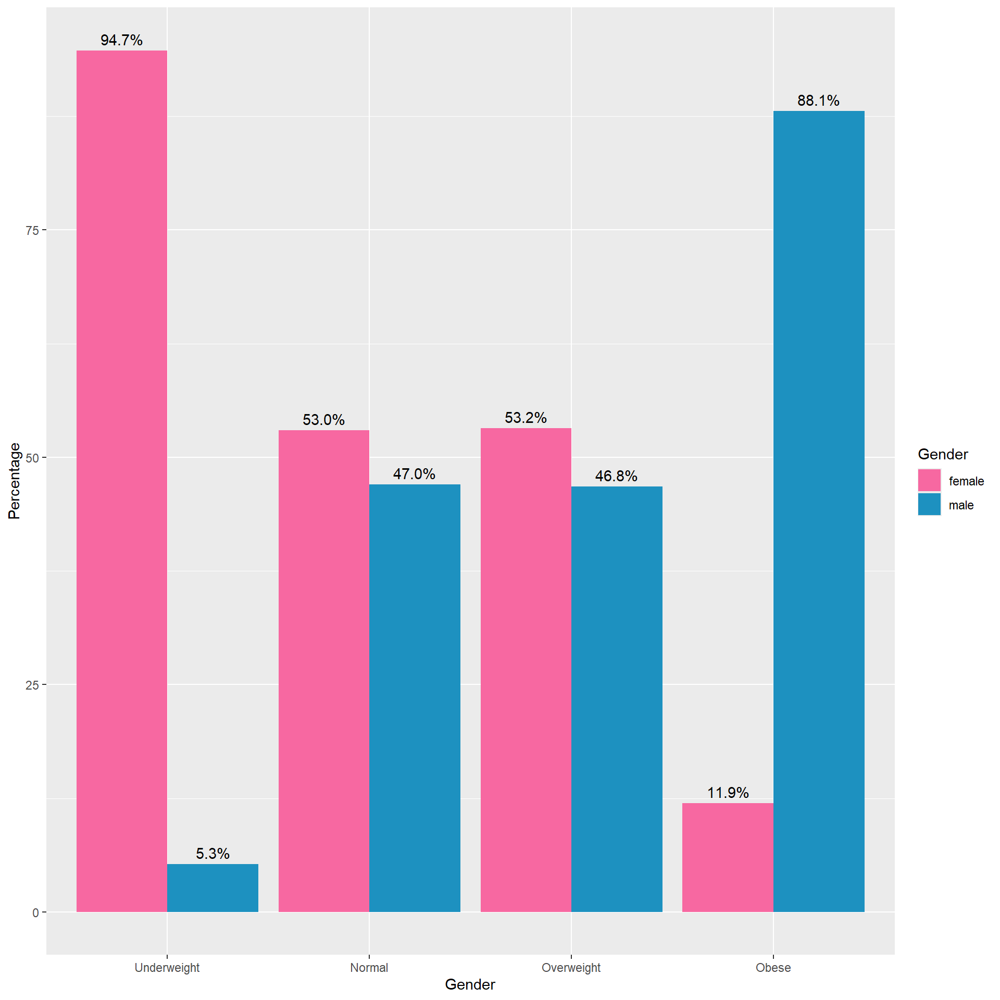
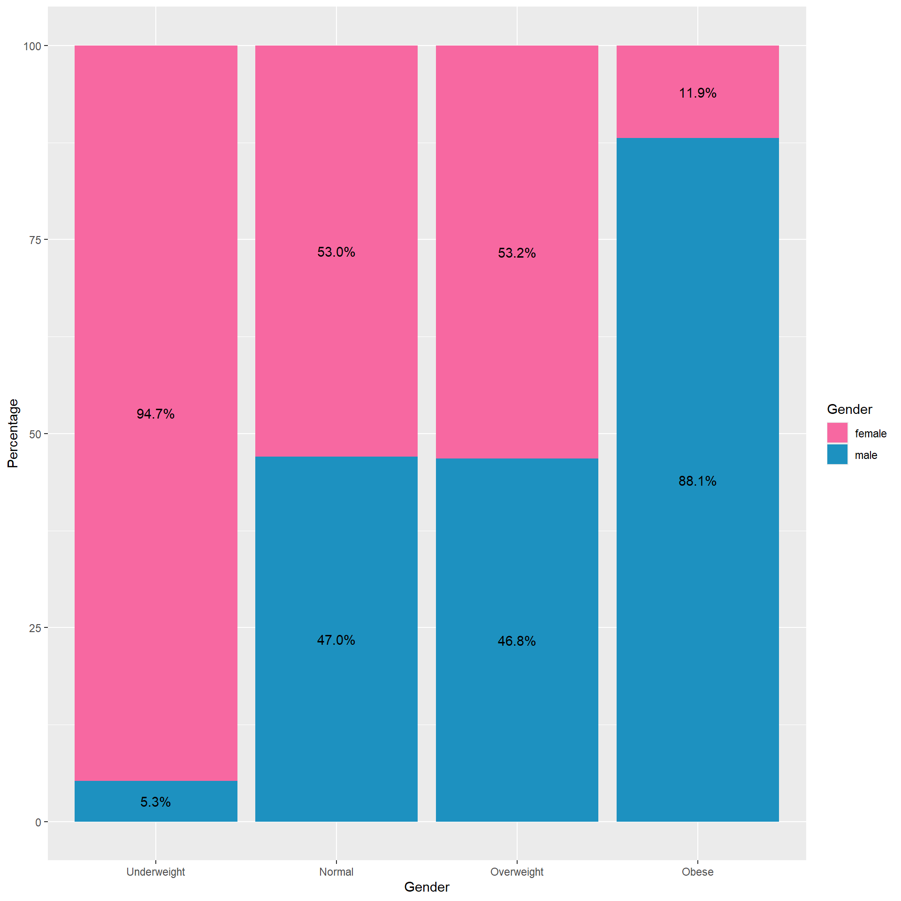
Facet Bar Chart
Facet by Gender
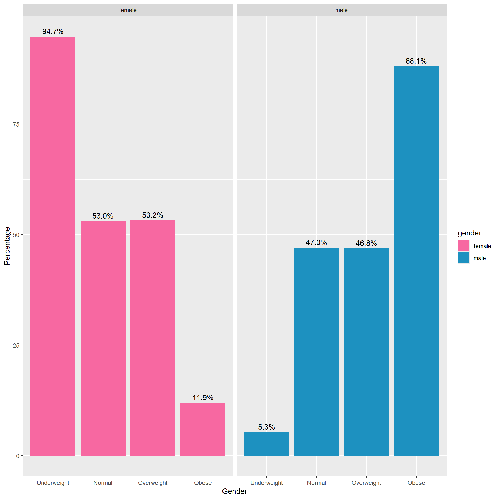Facet by BMI Category
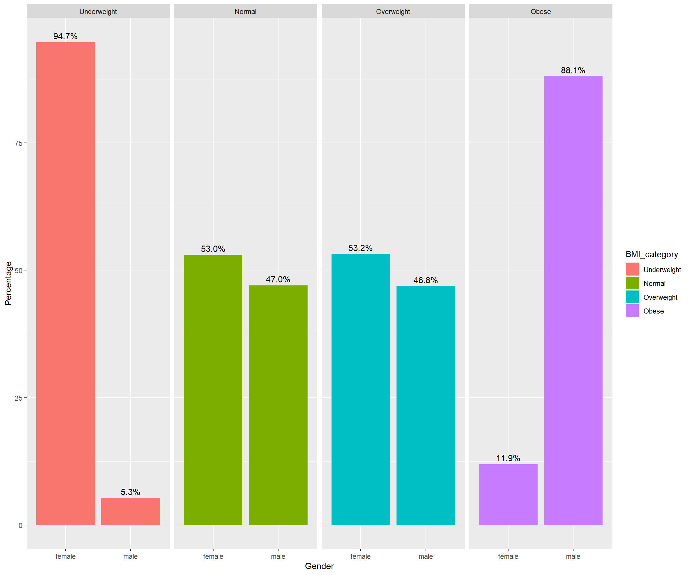Some rules
Don’t make them 3D: 3D charts can distort data and make it difficult to accurately interpret values.
Don’t use overly complex charts: Keep it simple. Overly complex charts can confuse the viewer and obscure the data.
Don’t use excessive colors: Too many colors can be distracting and make the chart hard to read. Stick to a simple color palette.
Don’t use misleading scales: Ensure the scales start at zero (when appropriate) and are consistent to avoid misrepresenting the data.
Don’t use pie charts for too many categories: Pie charts are hard to interpret with more than a few slices. Use a bar chart instead.
Don’t use inappropriate chart types: Match the chart type to the data you are presenting. For example, use line charts for trends over time and bar charts for comparing categories.
Don’t omit axis labels and titles: Always label your axes and give your chart a clear, descriptive title.
Don’t clutter with too much information: Avoid adding unnecessary elements like excessive gridlines, text, or data points.
Don’t ignore accessibility: Ensure your charts are readable for people with color blindness by using colorblind-friendly palettes and providing text alternatives.
Don’t make legends and labels too small: Ensure that legends and labels are large enough to be easily read.
Don’t use default settings without customization: Default settings might not be the best for your data. Customize your charts to improve clarity and impact.
Don’t ignore data source and context: Always provide the data source and context to help the audience understand where the data comes from and its relevance.